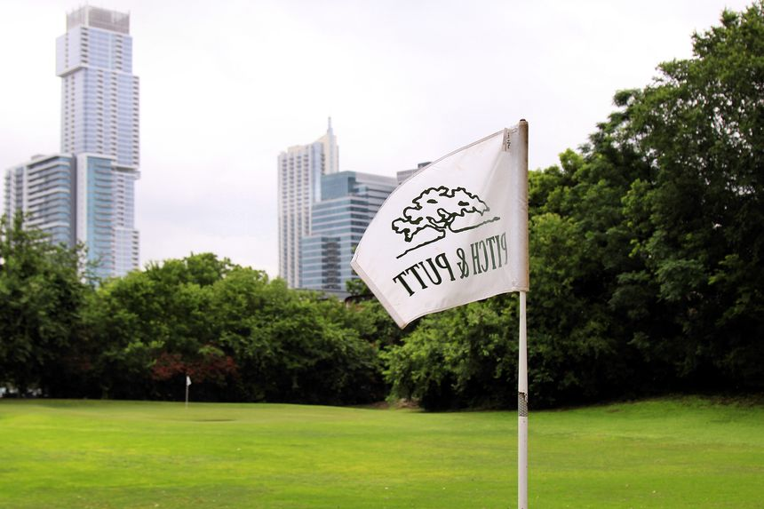
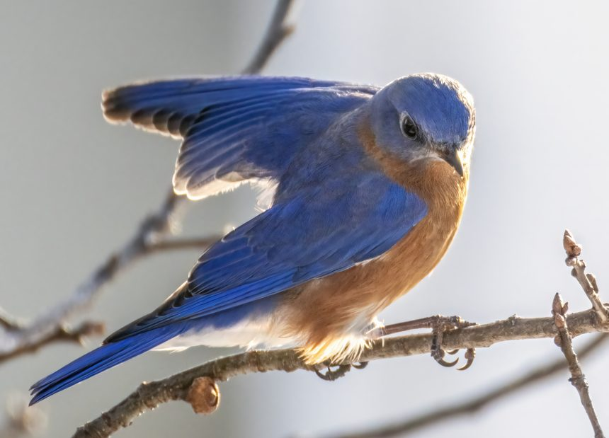
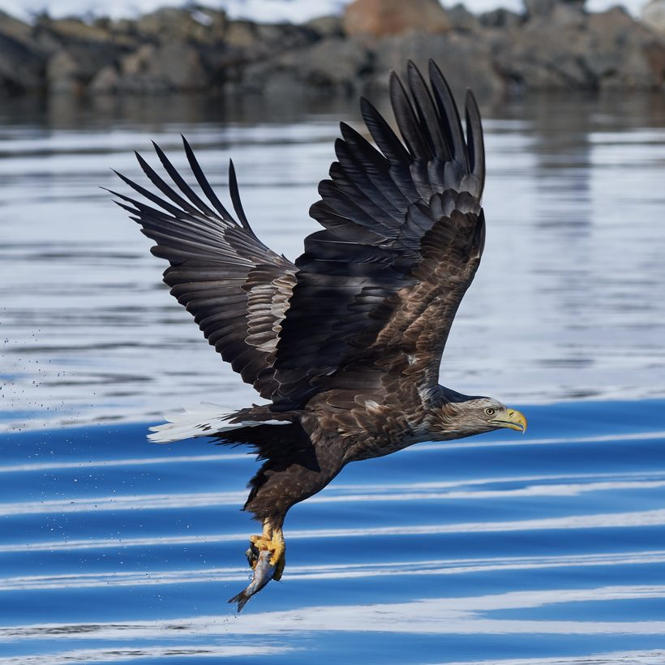
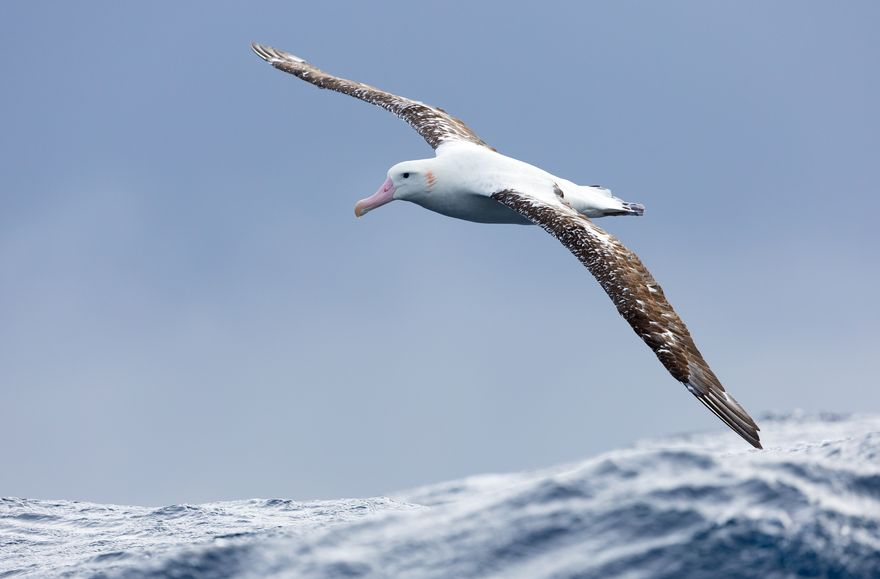
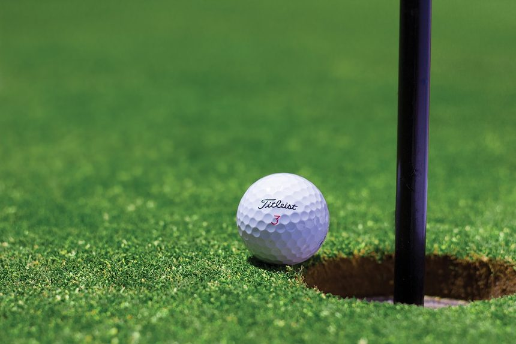
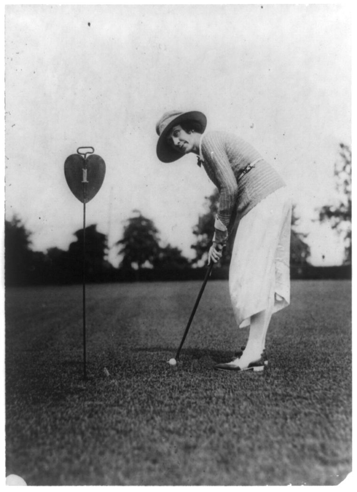

골프를 처음 접하면 가장 먼저 부딪히는 벽이 '점수 말'입니다. 분명 한국말인데 무슨 뜻인지 모를 단어들 — 파, 보기, 버디, 이글. 오늘은 이 스코어 용어들을 하나씩, 그리고 그 속에 숨은 새들의 이야기까지 풀어봅니다.
모든 것의 기준, 파(Par)

파(Par)는 '이 홀은 몇 타에 넣는 게 기준'이라는 약속된 타수입니다. 거리에 따라 보통 파 3·파 4·파 5로 나뉘죠. 18홀을 모두 기준대로 치면 대개 72타가 되고, 이게 한 라운드의 기준 점수가 됩니다.
실제 점수는 이 파를 기준으로 '몇 타 더 쳤나, 덜 쳤나'로 말합니다. 그래서 골프 점수는 숫자가 작을수록 좋습니다. 파보다 많이 치면 보기 계열, 적게 치면 새 이름이 등장합니다.
파보다 더 친 쪽 — 보기 계열
파보다 한 타 더 치면 보기(Bogey), 두 타 더 치면 더블 보기, 세 타면 트리플 보기입니다. '보기'라는 말은 19세기 영국에서 '도깨비(bogey man)'에 빗댄 표현에서 왔다고 전해집니다 — 잡기 어려운 기준 타수를 유령에 비유한 거죠.
파보다 덜 친 쪽 — 새들의 영역
여기서부터가 골프 용어의 묘미입니다. 파보다 적게 친 좋은 점수에는 모두 새 이름이 붙습니다. 더 좋은 점수일수록 더 크고 멋지게 나는 새가 등장하죠.
버디(Birdie) — 한 타 덜

파보다 한 타 적게 치면 버디입니다. 20세기 초 미국에서 '버드(bird)'가 '멋진 것'을 뜻하는 속어였는데, 한 선수가 멋진 샷을 두고 "그거 완전 버드였어!"라고 한 데서 버디(birdie)가 됐다고 합니다. 작은 새처럼, 골퍼에게 가장 자주 찾아오는 반가운 손님이죠.
이글(Eagle) — 두 타 덜

파보다 두 타 적게 치면 이글입니다. 버디(작은 새)에서 한 단계 올라가니, 더 크고 멋진 새인 독수리의 이름을 붙인 것이죠. 파 5 홀에서 두 번째 샷을 그린에 올려 한 번에 넣거나, 긴 퍼트가 들어가야 나오는 귀한 점수입니다.
알바트로스(Albatross) — 세 타 덜

파보다 세 타 적게 치면 알바트로스입니다. 독수리보다 더 크고 멀리 나는 바닷새의 이름을 붙였죠. 아마추어는 평생 한 번 볼까 말까 한 점수라, 그만큼 희귀한 새의 이름이 어울립니다. 미국에서는 '더블 이글'이라고도 부릅니다.
| 이름 | 파 대비 | 비고 |
|---|---|---|
| 알바트로스 | −3 | 매우 희귀 |
| 이글 | −2 | 훌륭한 점수 |
| 버디 | −1 | 반가운 점수 |
| 파 | 0 | 기준 타수 |
| 보기 | +1 | 한 타 초과 |
| 더블 보기 | +2 | 두 타 초과 |
모든 골퍼의 꿈, 홀인원

홀인원(Hole in one)은 티샷 한 번에 공이 홀에 들어가는 것입니다. 주로 짧은 파 3 홀에서 나오죠. 참고로 파 4 홀에서 단 한 번에 넣으면 그게 바로 알바트로스(−3)이고, 따로 '앨버트로스 홀인원'이라 부르기도 합니다. 확률로 따지면 아마추어 기준 수만 분의 일이라, 평생의 자랑거리가 됩니다.
마치며

스코어 용어를 알고 나면, 골프 중계도 라운딩도 전혀 다르게 들립니다. "버디 잡았다"는 말에 함께 기뻐할 수 있고, 내 점수가 파에서 몇 타 떨어져 있는지도 또렷이 보이죠.
처음엔 파만 기억해도 충분합니다. 파를 기준으로, 새 이름이 나올수록 좋은 점수. 이 한 문장만 손에 쥐고 시작하세요.